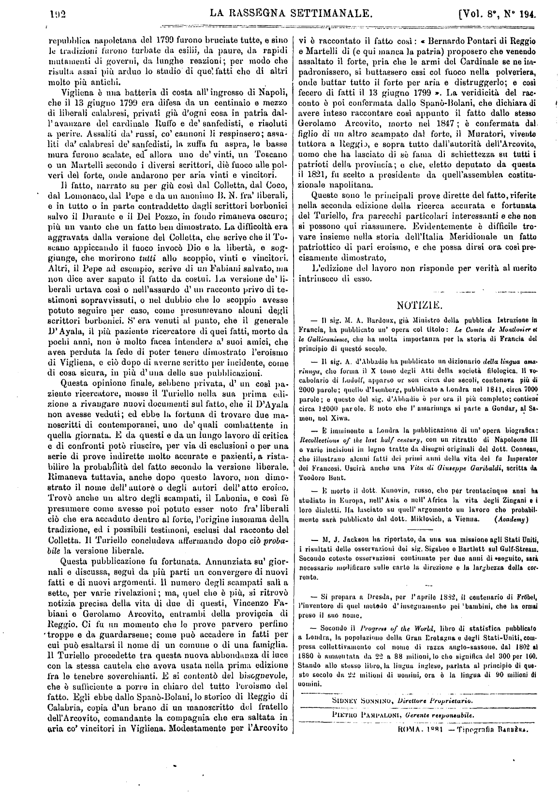

- Secondo il Progress of the World, libro di statistica pubblicato
a Londra, la popolazione della Gran Bretagna e degli Stati-Uniti, com-
presa collettivamento col nome di razza anglo-sassone, dal 1802 al
1880 è aumentata da 22 a 88 milioni, lo che significa del 300 per 100.
Stando allo stesso libro, la lingua inglese, parlata al principio di que-
sto secolo da 22 milioni di uomini, ora è la lingua di 90 milioni di
uomini.